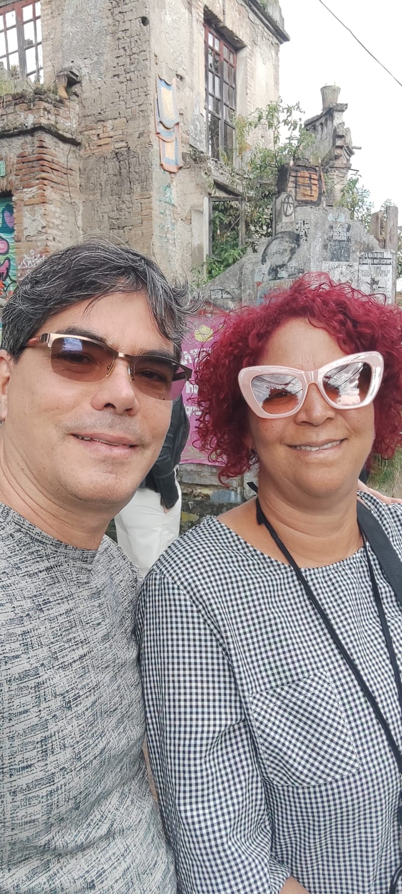

Soy la maestra de Pulse botón. Enseño programación agéntica para madres que dejan a sus hijas con el papá para ir a la universidad a pensar.
Ecuador · UNAE · 10:10 am → 10:10 pm
Contactar a IvánLa estrella roja del hombro de Orión. Visible desde Ecuador. Tocable desde tu celular.
640 años-luz de distancia. Su luz que ves ahora partió cuando los incas caminaban el Qhapaq Ñan.
Si estuviera en el centro de nuestro sistema, engulliría a Mercurio, Venus, la Tierra y Marte.
A pesar de estar a 640 años-luz, es una de las estrellas más brillantes del cielo.
Más fría que el Sol, pero gigantesca. Por eso brilla roja, no amarilla.
Podría explotar mañana o en 100,000 años. Cuando lo haga, será tan brillante como la Luna llena.
"Mira la estrella roja del hombro de Orión.
Ella no sabe que la nombramos.
Ella solo arde, se expande, respira.
Nosotros, desde nuestro grano de arena,
levantamos frascos para atrapar su luz."
— Tradición oral andina (reconstruida)
La escuela digital que cabe en tu mochila.
28 principios de diseño responsable que abrazan a Pulse botón. Estos son los 10 que sostienen todo:
No instalar luces que no se apaguen. No poner puertas que no se abran fácil.
La escuela funciona sin internet. La luz solar entra por ventanas grandes.
Cada cartel, cada señal, cada nombre de oteca tiene contexto, historia, poesía.
El quirófano y el estanquillo tienen el mismo tamaño en el plano.
Las otecas no tienen manuales de uso. Tienen preguntas en las paredes.
Cada pared es un pizarrón. Cada mesa tiene papel y lápiz.
Una misma silla puede ser de maestra, de estudiante, de curandera, de astrónoma.
Los planos de construcción son públicos. Cualquiera puede replicar la escuela.
Si una madre no puede entrar, la escuela no está terminada.
No la más barata, no la más rápida. La que funcione para todas.
¿Querés construir la escuela? ¿Querés aprender programación agéntica?
Escribime. O encontrame en la UNAE, Ecuador. Horario: 10:10 am → 10:10 pm.
Escribirle a la maestra